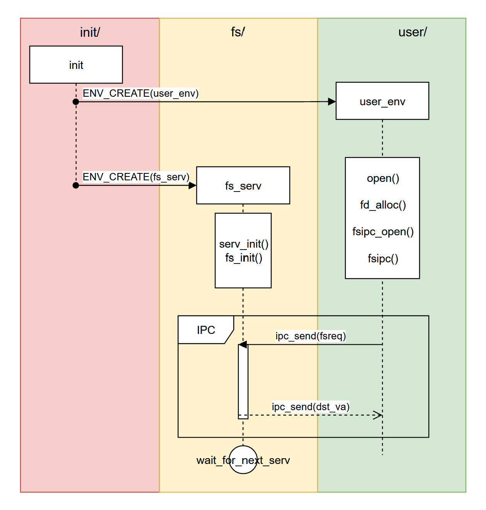

OS-Lab5
思考题
如果通过 kseg0 读写设备，那么对于设备的写入会缓存到 Cache 中。这是一种错误的行为，在实际编写代码的时候这么做会引发不可预知的问题。请思考：这么做这会引发什么问题？对于不同种类的设备（如我们提到的串口设备和 IDE 磁盘）的操作会有差异吗？可以从缓存的性质和缓存更新的策略来考虑。
- 当外部设备产生中断信号或者更新数据时，此时Cache中之前旧的数据可能刚完成缓存，那么完成缓存的这一部分无法完成更新，则会发生错误的行为。
- 对于串口设备来说，读写频繁，信号多，在相同的时间内发生错误的概论远高于IDE磁盘。
Thinking 5.2 查找代码中的相关定义，试回答一个磁盘块中最多能存储多少个文件控制块？一个目录下最多能有多少个文件？我们的文件系统支持的单个文件最大为多大？
一个磁盘块的大小：BLOCK_SIZE = 4096
一个文件控制块的大小：sizeof(struct File) = 256
一个磁盘块中能存储4096/256=16个文件控制块
一个文件最多使用1024个磁盘块
每个磁盘块能存16个File
一个目录下最多能有1024*16=16384个文件控制块
每个文件有10个直接块指针
每个块4KB所以直接指针最多表示10*4KB=40KB的文件
一个间接块是4KB，每个块号是4字节
所以一个间接块能放1024个块号
MOS为了简化计算，不使用间接块的前10个指针1
2filebno 0 ~ 9 使用 f_direct[0~9]
filebno 10 ~ 1023 使用 f_indirect[10~1023]
所以整个文件的逻辑块号是0~1024
单个文件大小1024*4KB=4MB
Thinking 5.3 请思考，在满足磁盘块缓存的设计的前提下，我们实验使用的内核支持的最大磁盘大小是多少？
磁盘缓存区域大小:0x50000000 - 0x10000000 = 0x40000000 = 1GB
Thinking 5.4 在本实验中，fs/serv.h、user/include/fs.h 等文件中出现了许多宏定义，试列举你认为较为重要的宏定义，同时进行解释，并描述其主要应用之处。
| 宏定义 | 含义 | 主要应用之处 |
|---|---|---|
BLOCK_SIZE |
一个磁盘块的大小，通常为 4096 字节，即 4KB。 | 文件系统以磁盘块为基本读写单位。read_block、write_block、file_get_block 等函数都以 BLOCK_SIZE 为单位读写磁盘块；计算文件占用块数时也会使用它。 |
BLOCK_SIZE_BIT |
一个 bitmap 块能够表示的磁盘块数量，通常为 BLOCK_SIZE * 8。 |
bitmap 中一个 bit 表示一个磁盘块是否空闲。free_block 中通过 blockno / BLOCK_SIZE_BIT + 2 找到某个块号对应的 bitmap 块。 |
MAXNAMELEN |
文件名的最大长度。 | struct File 中的 f_name[MAXNAMELEN] 用于保存文件名；dir_lookup、walk_path 等路径解析和文件查找函数会依赖这个长度限制。 |
MAXPATHLEN |
路径名的最大长度。 | 用于限制完整路径字符串的长度，例如 /dir1/dir2/file。在 open、file_open、walk_path 等路径解析过程中防止路径过长。 |
NDIRECT |
一个文件控制块中直接块指针的数量，通常为 10。 | struct File 中的 f_direct[NDIRECT] 记录文件前若干个数据块的块号。file_block_walk、file_map_block 中判断文件逻辑块是否可通过直接指针访问。 |
NINDIRECT |
一个间接块中能存放的磁盘块号数量，通常为 BLOCK_SIZE / 4，即 1024。 |
f_indirect 指向一个间接索引块，该块中存放 NINDIRECT 个块号，用于支持较大的文件。访问超过直接块范围的文件块时，需要通过间接块查找。 |
MAXFILESIZE |
单个文件支持的最大大小。 | 用于限制文件不能无限增长。file_get_block、file_set_size 等函数中需要检查文件偏移或文件块号是否超过最大文件大小。 |
FILE2BLK |
一个磁盘块中最多能存放多少个 struct File。通常为 BLOCK_SIZE / sizeof(struct File)。 |
目录文件的数据块中存放的是一组 struct File。dir_lookup、create_file 遍历目录项时，会用 FILE2BLK 遍历一个目录块中的所有文件控制块。 |
FTYPE_REG |
普通文件类型。 | struct File 的 f_type 字段可被设置为 FTYPE_REG，表示该文件的数据块中存放普通文件内容。 |
FTYPE_DIR |
目录文件类型。 | f_type 为 FTYPE_DIR 时表示该文件是目录。目录的数据块中存放的是若干 struct File，而不是普通文件内容。路径查找和目录遍历时会使用该类型进行判断。 |
DISKMAP |
文件系统服务进程中磁盘块缓存区的起始虚拟地址。 | 磁盘块缓存通过 disk_addr(blockno) 将磁盘块号映射到 DISKMAP + blockno * BLOCK_SIZE 的虚拟地址。map_block、read_block、write_block 都依赖这个地址布局。 |
DISKMAX |
磁盘块缓存区能够覆盖的最大磁盘范围。 | 用于限制可缓存、可访问的最大磁盘大小，防止 disk_addr(blockno) 超出文件系统服务进程预留的磁盘缓存区域。 |
REQVA |
文件系统服务进程接收用户请求页的虚拟地址。 | 用户进程通过 IPC 向文件系统服务进程发送请求时，请求结构会映射到服务进程的 REQVA 处。serv.c 中处理 open、map、dirty 等请求时会从该地址读取请求内容。 |
FSREQ_OPEN |
文件系统服务请求类型：打开文件。 | 用户态 open 最终会通过 fsipc_open 向文件系统服务进程发送 FSREQ_OPEN 请求，由 serve_open 处理。 |
FSREQ_MAP |
文件系统服务请求类型：映射文件块。 | 当用户进程需要访问文件某个数据块时，会通过 FSREQ_MAP 请求文件系统服务进程将对应文件块映射到用户进程地址空间。 |
FSREQ_DIRTY |
文件系统服务请求类型：标记文件块为脏。 | 用户进程修改文件内容后，需要通知文件系统该块已经被修改，后续需要写回磁盘。对应 serve_dirty、file_dirty 等函数。 |
FSREQ_SET_SIZE |
文件系统服务请求类型：修改文件大小。 | 写文件导致文件变大，或使用截断操作时，需要通过该请求修改文件的 f_size，必要时分配或释放磁盘块。 |
FSREQ_REMOVE |
文件系统服务请求类型：删除文件。 | 用户调用 remove 删除文件时，通过该请求让文件系统服务进程执行路径查找、释放文件块、清除目录项等操作。 |
FSREQ_SYNC |
文件系统服务请求类型：同步文件系统。 | 用于将文件系统中已经修改但尚未写回的磁盘块同步到磁盘，保证磁盘镜像中的内容与内存缓存一致。 |
这些宏定义分别服务于文件系统的四个核心部分：
文件结构描述，如MAXNAMELEN、NDIRECT、NINDIRECT、FILE2BLK；
磁盘块管理，如BLOCK_SIZE、BLOCK_SIZE_BIT、DISKMAP、DISKMAX；
文件类型区分，如FTYPE_REG、FTYPE_DIR；
文件系统服务通信，如FSREQ_OPEN、FSREQ_MAP、FSREQ_DIRTY、FSREQ_REMOVE。
它们共同保证了用户进程能够通过统一接口访问文件，而文件系统服务进程能够完成路径解析、块映射、缓存管理和磁盘同步等操作。Thinking 5.5 在 Lab4“系统调用与 fork”的实验中我们实现了极为重要的 fork 函数。那么 fork 前后的父子进程是否会共享文件描述符和定位指针呢？请在完成上述练习的基础上编写一个程序进行验证。
会，如果 fork 时文件描述符页以共享方式映射到父子进程中，那么父子进程看到的是同一个Fd 页，fd_offset 也就是同一个内存位置。一个进程读写文件后更新 fd_offset，另一个进程随后读写时会看到已经变化后的偏移。1
2
3
4
5
6
7
8
9
10
11
12
13
14
15
16
17
18
19
20
21
22
23
24
25
26
27
28
29
30
31
32
33
34
35
36
37
38
39
40
41
void umain(void) {
int fd, r;
char buf[4];
fd = open("/test.txt", O_RDONLY);
if (fd < 0) {
user_panic("open failed: %d", fd);
}
r = fork();
if (r < 0) {
user_panic("fork failed: %d", r);
}
if (r == 0) {
// 子进程先读 3 字节
memset(buf, 0, sizeof(buf));
r = read(fd, buf, 3);
if (r < 0) {
user_panic("child read failed: %d", r);
}
debugf("child read: %s\n", buf);
// 让父进程有机会在子进程读完后运行
syscall_yield();
return;
} else {
// 简单让出 CPU，尽量保证子进程先读
syscall_yield();
syscall_yield();
memset(buf, 0, sizeof(buf));
r = read(fd, buf, 3);
if (r < 0) {
user_panic("parent read failed: %d", r);
}
debugf("parent read: %s\n", buf);
}
}
预期输出结果：1
2child read: abc
parent read: def
Thinking 5.6 请解释 File, Fd, Filefd 结构体及其各个域的作用。比如各个结构体会在哪些过程中被使用，是否对应磁盘上的物理实体还是单纯的内存数据等。说明形式自定，要求简洁明了，可大致勾勒出文件系统数据结构与物理实体的对应关系与设计框架。
1 | File ：描述磁盘上的文件本身 |
struct File
描述的是一个文件或者目录本身。
使用场景：1
2
3
4
5
6路径解析：walk_path
目录查找：dir_lookup
文件创建：file_create / create_file
文件块映射：file_block_walk / file_map_block
文件读写：file_get_block
文件删除：file_remove1
2
3
4
5
6
7目录 File
└── f_direct[i] 指向目录数据块
└── 目录数据块中存放多个 struct File
普通文件 File
└── f_direct[i] 指向普通数据块
└── 普通数据块中存放文件内容
struct Fd
文件描述符结构，用于描述用户进程中一个已经打开的对象。
作用是提供统一的用户接口。无论底层是普通文件、控制台还是管道，用户都可以使用相同的操作：1
2
3read(fd, buf, n);
write(fd, buf, n);
close(fd);
struct Filefd
专门用于普通文件的文件描述符扩展结构。
应用过程:1
2
3
4
5
6
7
8
9
10
11open(path, mode)
↓
fd_alloc 分配一个 Fd 页
↓
fsipc_open 请求文件系统服务打开文件
↓
文件系统服务把 Filefd 信息填入该页
↓
用户进程把 Fd * 强转为 Filefd *
↓
读取 f_file.f_size、f_fileid 等信息
| 结构体 | 所在层次 | 主要作用 | 是否持久存在于磁盘 |
| ———— | ———— | —————————————————————— | ———————————————— |
| File | 文件系统元数据层 | 描述文件本身，记录文件名、大小、类型和数据块位置。 | 主要对应磁盘上的文件控制块/目录项。 |
| Fd | 用户进程运行时层 | 描述一个已打开对象的当前状态，如设备类型、偏移量、打开模式。 | 否，是内存中的运行时状态。 |
| Filefd | 普通文件描述符层 | 在 Fd 基础上增加普通文件专用信息，如 fileid 和 File 副本。 | 否，整体是内存结构；其中 f_file 是磁盘元数据的副本。 |
Thinking 5.7 图 5.9 中有多种不同形式的箭头，请解释这些不同箭头的差别，并思考我们的操作系统是如何实现对应类型的进程间通信的。

图 5.9 中主要有三类箭头。
第一类是 ENV_CREATE 箭头，表示
init进程创建用户进程user_env和文件系统服务进程fs_serv。它体现了文件系统服务作为独立用户态进程运行的设计。第二类是进程内部的虚线箭头，表示同一进程内部的函数调用或执行顺序。例如
user_env中open依次调用fd_alloc、fsipc_open、fsipc；fs_serv中先执行serv_init、fs_init，然后进入等待请求的循环。第三类是 IPC 通信箭头。
ipc_send(fsreq)表示用户进程向文件系统服务进程发送文件系统请求，如打开文件、映射文件块等；ipc_send(dst_va)表示文件系统服务进程处理完成后，将结果返回给用户进程，必要时还会通过IPC完成页面映射。
MOS 中的进程间通信由 Lab4 中实现的 IPC 系统调用支持。用户进程通过 ipc_send 发送请求，文件系统服务进程通过 ipc_recv 接收请求并处理，再通过 ipc_send 返回结果。IPC 不仅可以传递普通数值，也可以传递页面映射，因此文件系统服务可以把文件描述符页或文件数据页映射到用户进程指定的虚拟地址。
实验难点
磁盘块、块缓存与虚拟地址映射的关系
Lab5 采用块缓存机制，将磁盘块映射到文件系统服务进程的一段虚拟地址空间中。也就是说，磁盘块不是每次都直接读写，而是先映射到内存，再通过内存地址访问。
核心关系是：
1 | 磁盘块号 blockno |
map_block 负责为磁盘块分配缓存页，unmap_block 负责解除映射。如果缓存页被修改过，也就是 dirty，就需要在解除映射前写回磁盘。这里的难点是理解“写回”的含义：修改首先发生在内存缓存中，只有调用 write_block 后才真正同步到磁盘。
bitmap 空闲块管理
文件系统需要管理哪些磁盘块空闲、哪些已经被占用。Lab5 使用 bitmap 来表示磁盘块状态。
难点在于 bitmap 是按 bit 管理磁盘块，而不是一个块对应一个整数：
1 | bitmap[blockno / 32] |= 1 << (blockno % 32); |
这句表示把 blockno 对应的 bit 置为 1，表示该块空闲。这里需要理解：
1 | 一个 u_int 有 32 位 |
另外，修改 bitmap 后，还需要把对应的 bitmap 磁盘块写回磁盘，否则空闲状态只存在于内存缓存中。
File 结构与文件物理结构
struct File 是 Lab5 中最重要的结构之一，可以理解为文件控制块。它保存文件名、大小、类型、直接块指针和间接块指针。
难点在于：File 本身不存放文件内容，它只是记录文件内容在哪些磁盘块中。
1 | struct File |
普通文件的数据块中存放普通字节内容；目录文件的数据块中存放一组 struct File。因此目录也是文件，只是它的数据内容比较特殊。
这也是 Lab5 中最容易混淆的一点：
1 | 普通文件的数据块：文件内容 |
同样是 disk[bno].data，要根据块的用途解释成不同类型。
目录查找与路径解析
dir_lookup 和 walk_path 是文件系统从“路径名”找到“File 结构”的关键函数。
dir_lookup 的作用是在某个目录的数据块中查找指定名字的文件；walk_path 则负责把完整路径逐级解析。
例如：
1 | /a/b/c.txt |
需要依次查找：
1 | 根目录 / |
walk_path 的几个参数也容易混：
1 | path：要解析的路径 |
例如创建文件时，如果目标文件不存在，但父目录存在，就需要 pdir 和 lastelem 来确定“在哪个目录下创建什么名字的文件”。
文件描述符 Fd 与 Filefd 的关系
Lab5 不仅实现磁盘上的文件，还要实现用户进程访问文件的接口。用户进程并不直接操作 struct File，而是通过文件描述符 fd 访问文件。
Fd 是通用文件描述符，记录设备类型、当前偏移量和打开模式：
1 | struct Fd { |
Filefd 是普通文件对应的扩展结构：
1 | struct Filefd { |
难点在于理解三者层次：
1 | File：描述磁盘上的文件本身 |
read、write 操作使用的是 fdnum，内部会通过 fd_lookup 找到 Fd，再根据 fd_dev_id 找到具体设备操作表，最终调用对应的 dev_read 或 dev_write。
实验体会
lab5感觉代码量没有lab4大，理解起来比较费劲。但是一旦想通了连贯起来，做起来还是挺快的。要注意一些细节的问题和特殊的常用的宏、函数的使用。lab5-pre-exam的重点是要理解walk_path的作用(实际上就是把path转化为文件pfile，找到则返回0，而pdir记录该文件的父目录)，以及要注意拼接字符串时要有\(目录的特殊格式)，注意末尾是否需要手动加\0标志字符串结束。lab5-exam/extra看得出来是奖励关了哈哈哈哈哈哈，很顺利，没什么好说的。
原创说明
参考了往届三位学长学姐的博客。感谢他们的精心整理和付出。
https://hyggge.github.io
https://yanna-zy.github.io
https://demiurge-zby.github.io